The QCW - short for "Quasi-Continuous Wave dual-resonant solid state tesla coil" - is a type of dual-resonant solid state tesla coil (DRSSTC) which operates for much longer on-times than a typical DRSSTC, typically 7-20ms as opposed to <300µs. The term 'quasi-continuous' is, I believe, borrowed from laser terminology. Many fascinating and beautiful plasma effects can be achieved by a QCW, but one of the most well-known and stunning effects is achieved by slowly ramping the power output of the coil up from a low power to a high power in a few milliseconds. The result of this is incredibly straight, 'sword-like' arcs, which can end up more than ten times the length of the actual coil if tuned properly.
This brings up a few unique design challenges, in addition to the existing difficulty in designing an ordinary DRSSTC. First, is the question of how to build a DRSSTC so it can run continuously for several milliseconds without blowing up. In a standard DRSSTC of the size we will be building, the resonant frequency will be on the order of a few hundred kilohertz, and the primary peak currents can be greater than 300A. This is fine when running TO-247 IGBTs with 200µs pulses, but there are no semiconductors currently available for an affordable price which can handle these currents at these frequencies for more than a millisecond. To get around this problem, we will have to build the primary circuit to a much higher impedance than is typical. Of course, in an ideal resonant circuit the impedance is always zero, but in the case of a tesla coil the primary circuit is damped by its coupling to the much more lossy secondary coil, as well as to the formation of plasma. This is what normally limits the peak current in the primary circuit, other than the on time. To keep primary current below ~150A, we will use a relatively high impedance primary coil and resonant capacitor bank, something greater than 40Ω. Additionally, higher coupling between primary and secondary coil than is typical for a DRSSTC will be beneficial for this, allowing faster energy transfer from primary to secondary circuit. This causes an additional issue in raising coupling while avoiding arcing between the primary and secondary coils. Some people have attempted to raise coupling in QCW coils using a large ferrite core inside the secondary (see this coil by Dave Knierem and this coil by jmartis2) , but this presents problems with insulation to prevent internal arcing, not to mention the high cost of large ferrites. Instead, we will simply get the primary as close as possible to the secondary while maintaining enough distance to prevent arcing. By using FEMM to optimize the primary geometry, we can still get a coupling coefficient greater than 0.4 while maintaining good distance.
The second design problem I want to talk about is, how do we actually achieve a smooth ramp up in power over a few milliseconds in a device that's pulling potentially over ten kilowatts from the bus capacitors? There are a few approaches people have taken to achieve this, but two in particular have been shown to be effective. These are 1: powering the tesla coil's inverter through a fast-responding buck converter capable of rapidly modulating its output voltage, and 2: using a modulated phase-shift in one leg of the full-bridge inverter to essentially add dead time to the inverter according to an input signal.
The phase-shift full-bridge (PSFB) seems attractive at first, because it doesn't require any additional power electronics to be implemented. However, it has the downside that it's guarenteed that at least half of the semiconductors will not be switching at zero current, resulting in much greater switching losses and therefore requiring more powerful and/or faster semiconductors. Additionally, to evenly spread this load across the full bridge requires the phase shift to alternate legs, which significantly complicates driver circuitry. While this could still be implimented using individual logic gates, it would likely be more practical to switch to an FPGA to impliment this.
The buck converter route on the other hand, requires more power electronics but is significantly easier to control, while additionally having the advantage that the inverter can be tuned as close as possible to perfect zero current and zero voltage switching. This massively reduces switching losses at the frequencies we are working at, allowing our individual TO-247 IGBTs to be ran somewhat above their continuous current rating without significant heating. For these reasons, I chose to go with the buck converter method.
"Good" performance for a QCW is generally considered to be arcs more than 10 times the secondary coil height. I was shooting for arcs around 50 inches, so our secondary coil will be around 5 inches tall. Based on similar projects by other people, and my own experience and calculations, I came up with the following design specifications. Some of these would end up being changed later on.
This was the first part of the design that I actually built. At the time that I built this project, I had very little experience with microcontrollers so I chose to use this arduino based design that had been publicly shared on highvoltageforum.net by Finn Hammer. The design generates 2 signals, one is sent to the interrupter input on the driver, which enables and disables the driver. The other signal is a PWM signal used to create the analog signal to specify the desired current voltage on the bus. In the images below, I'm testing it using a low-pass filter to convert the PWM signal into an analog curve.
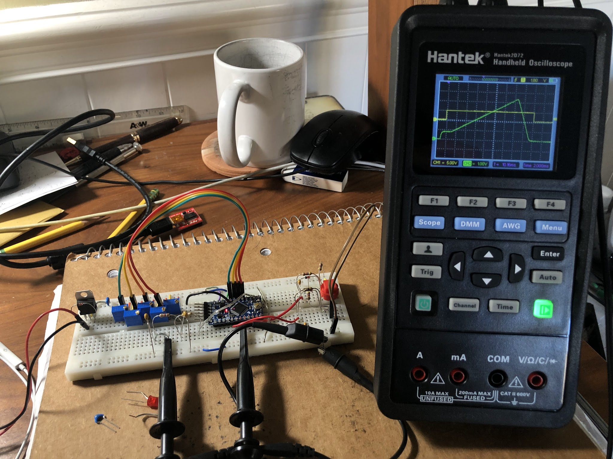
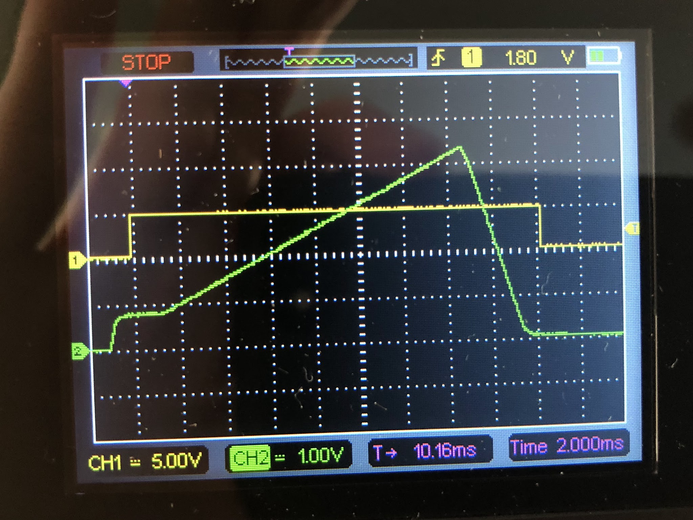
And then, all we need is to put it together into a nice case! I soldered everything up with some connectors for easy maintenance, and then, I didn't have access to a 3D printer at the time, so I went to the hardware store and found an electrical box thing that seemed like a good size. Then to finish it off, I cut out a plastic panel and borrowed a friend's label maker to label everything.
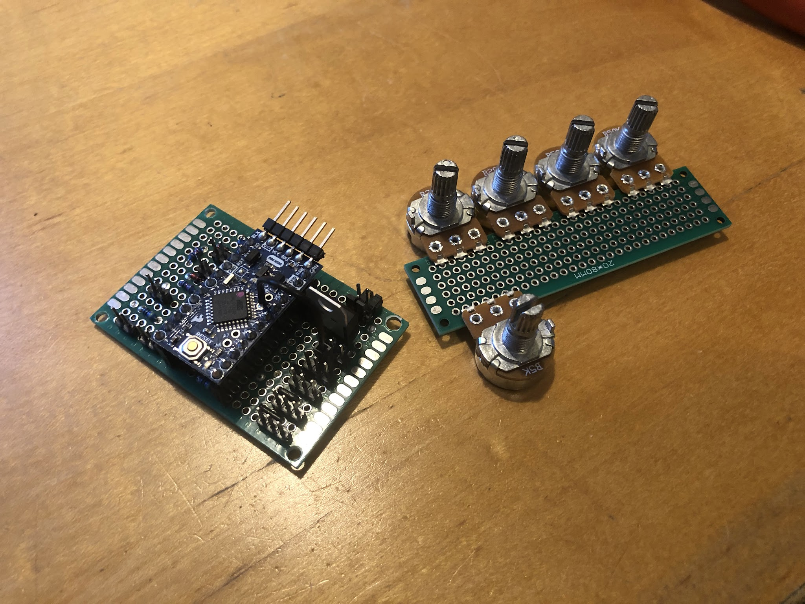
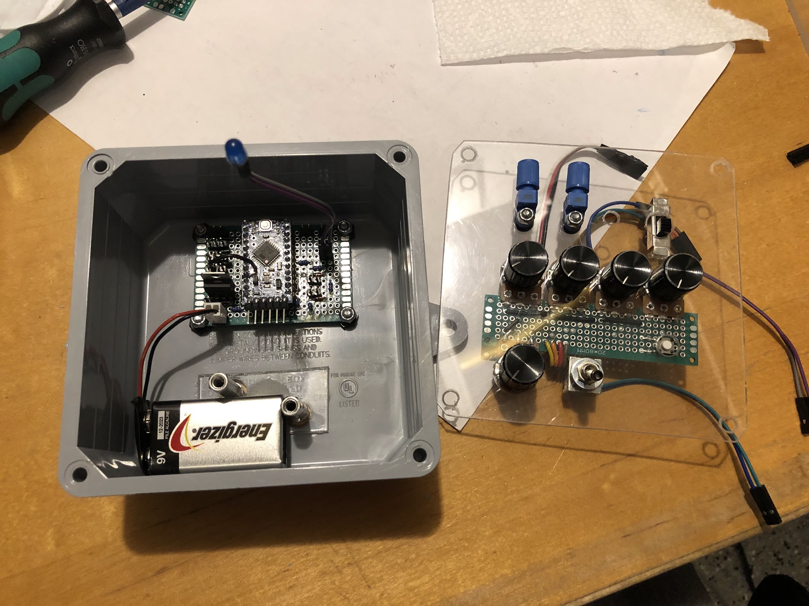
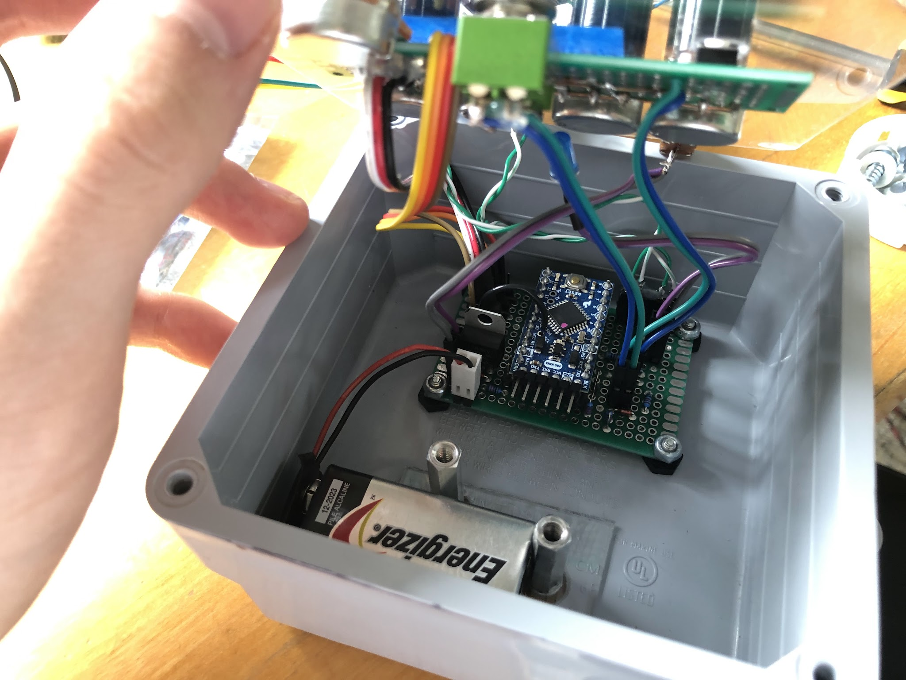
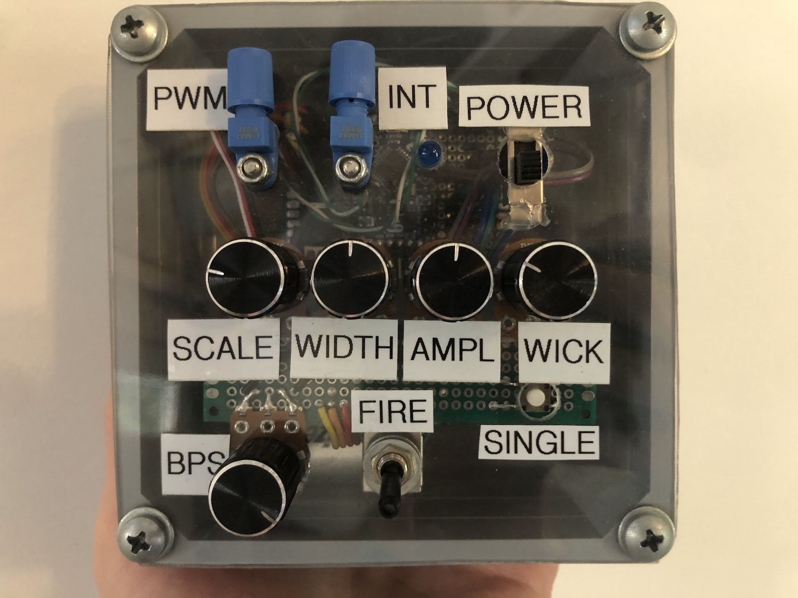
The buck converter needs to be able to take an input of 340V, from doubled mains voltage, and be able to drop that down to the whole range from 0-340V, while being able carefully rise the output voltage acording to the PWM signal recieved from the arduino. The precise voltage given by the converter is not critical, but rather that the voltage responds quickly and is decently stable.
If it was desired to rapidly and precicely lower the inverter power as well, for example to achieve audio modulation, then a synchronous buck converter would be necessary, basically a very powerful class-D audio amplifier. However, we're only interested in precisely ramping up the voltage, and the load is roughly constant so an asynchronous buck converter works just fine.
I chose to build the buck converter heavily based on a design by Gao Guangyan's design here, which is in turn based on previous work by Steve Ward. It is a relatively simple closed-loop asynchronous buck converter driver based on an ultrafast comparator with some hysteresis, comparing an input signal and the output of the buck converter. I wanted to also implement overcurrent protection to the buck converter in case something goes wrong, so I added a latch taking input from a comparator that would compare the output of some current measuring device to an adjustable reference voltage. If tripped, the input to the isolated gate driver is forced low until the circuit is powered off or manually reset.
Of course, the buck converter needs to be able to handle hard-switching at current peaks above 100A, which means we need some pretty serious silicon. I already chose FGH75T65SHD IGBTs for the inverter, so to make things a bit simpler I decided to use these for the buck converter as well. These are rated for 150A continuous when cold, but since we're hard switching such a high current and some heating will definitely occur, I chose to put 2 in parallel. For the freewheeling diode, I had recently gotten some large and fast SOT-227 diodes for cheap and figured this was a good opportunity to use one. They are DSEI2X31-10B, 2x 30A diodes. The diodes are carrying a lower average current and are not subject to the same switching stress as the IGBTs, so the 60A continuous rating is fine. As with any switching converter, decoupling capacitors are crucial. I used 2 1µF PP film capacitors, each placed as close as possible to one of the IGBTs.
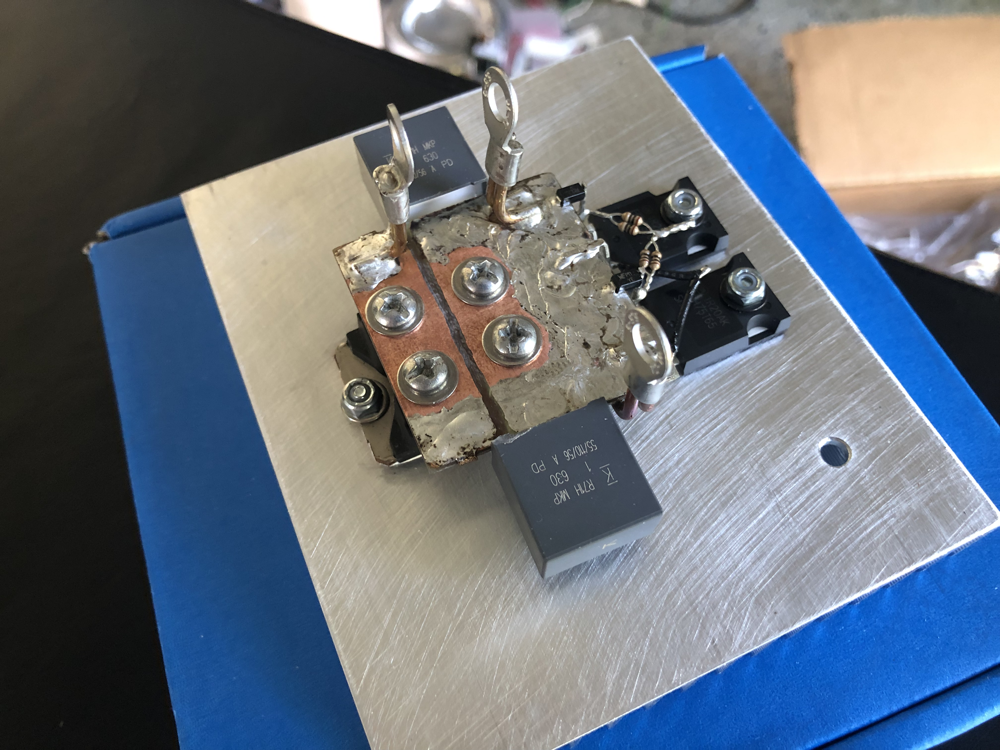
For the output LC filter on the buck converter, the inductor and capacitor need to both be able to handle the very high currents involved. The capacitor is the easy part, I chose to use two large 1.1kV 10µF PP film capacitors, which will double as decoupling on the inverter board. The inverter will also have 2 smaller 2.2µF snubber capacitors, bringing the total capacitance to about 24µF.
The inductor on the other hand, isn't so simple. Buying an appropriate inductor for this amount of current would be very pricey, so instead we make it ourselves. The hard part is that it has to be able to handle >100A without getting near saturation. Additionally, because the switching frequency of our simple buck converter will be relatively low, potentially only 10kHz when operating at minimum power, we need a cutoff frequency significantly below this. I chose to aim for 100µH, giving a cutoff frequency of 3.2kHz. Making an inductor with this inductance that can handle >100A requires the use of a very beefy core. Some people have had success using various shapes of ferrites, however the simplest approach is to use an iron powder ring. There are many different iron powder materials, but they generally have a fairly low permeability and high saturation flux density, making them a good choice for our inductor. I used a large toroid of the -2 material, which has been shown to be suitable for QCW buck converters by Gao Guangyan with very good results. The inductor was formed by painstakingly winding around 65 turns of 12 AWG solid-core wire around the large iron powder ring.
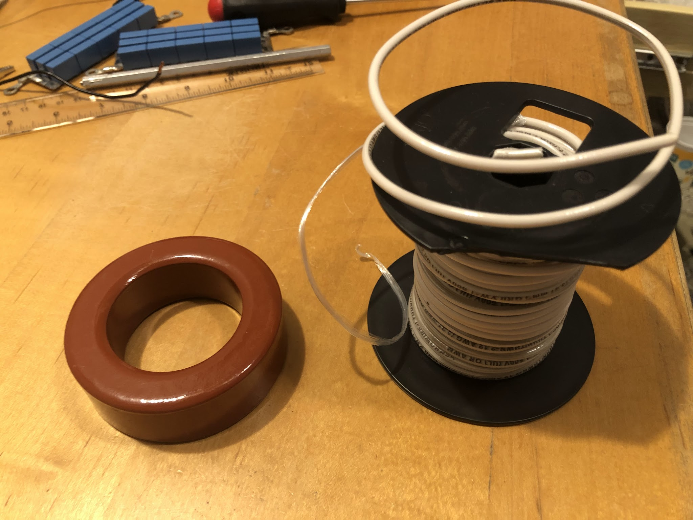
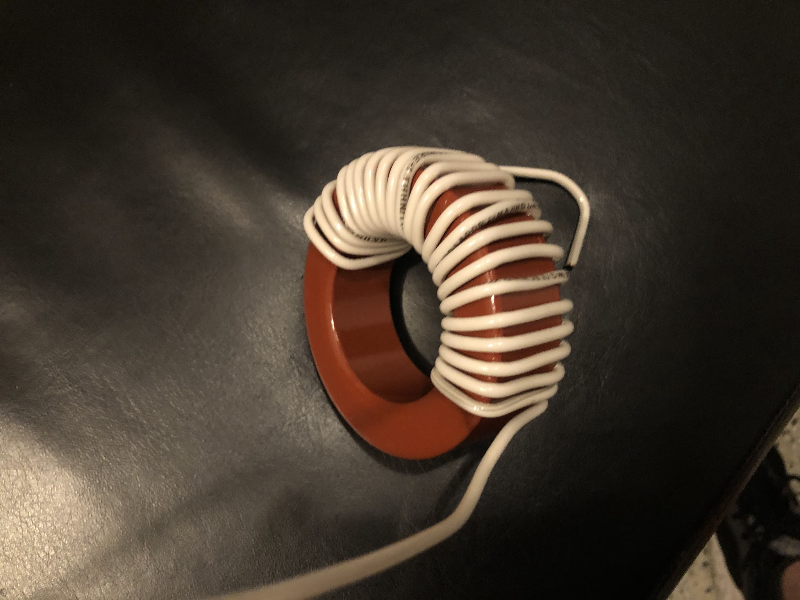
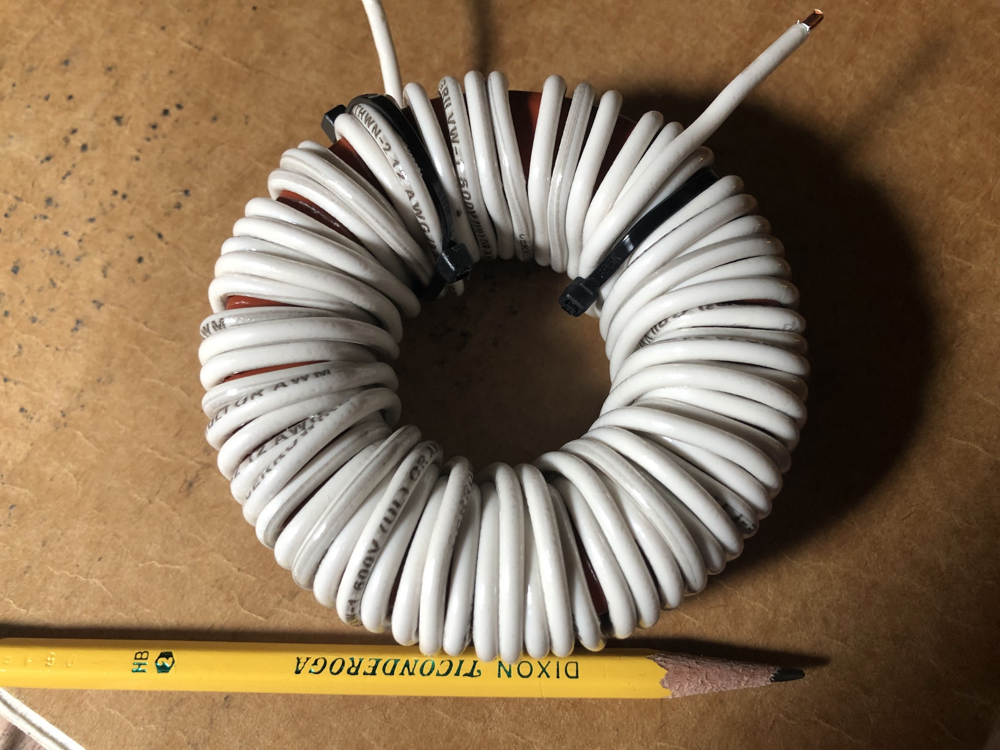
Now for the driver, as previously mentioned I had added over current protection to the circuit. To actually sense the buck converter current, I chose to use a large Hall effect sensor which I had gotten from the same person who got me those diodes. The sensor, HAS 100-S, was fairly easy to implement but did need it's own positive and negative 15V rails. The final driver is shown below.
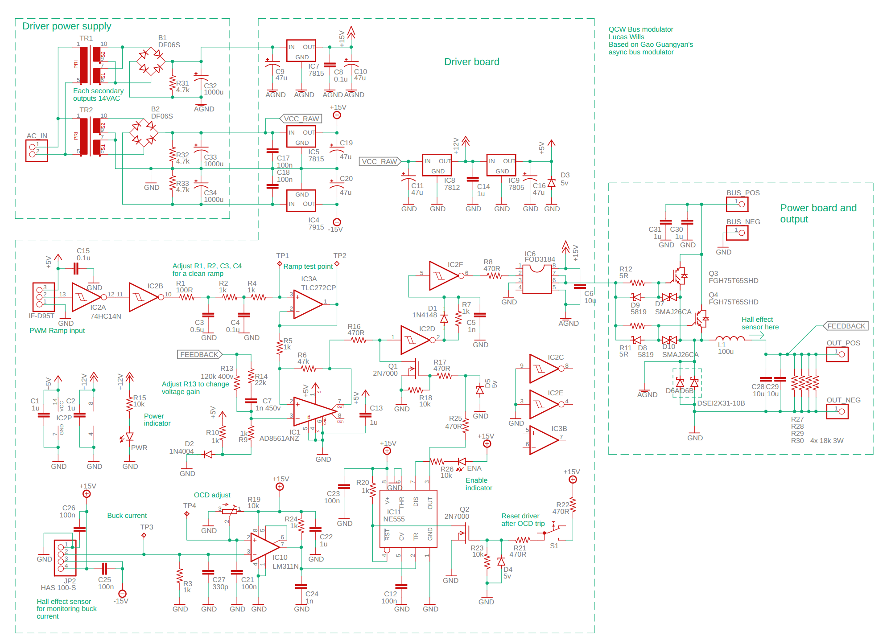
Then, all that's left for the buck converter was to put the driver together. At the time I was still doing most of my work on perfboards so...
Note the plastic case covered in aluminum tape. It's important to keep all the EM waves from the coil away from the driver circuitry.
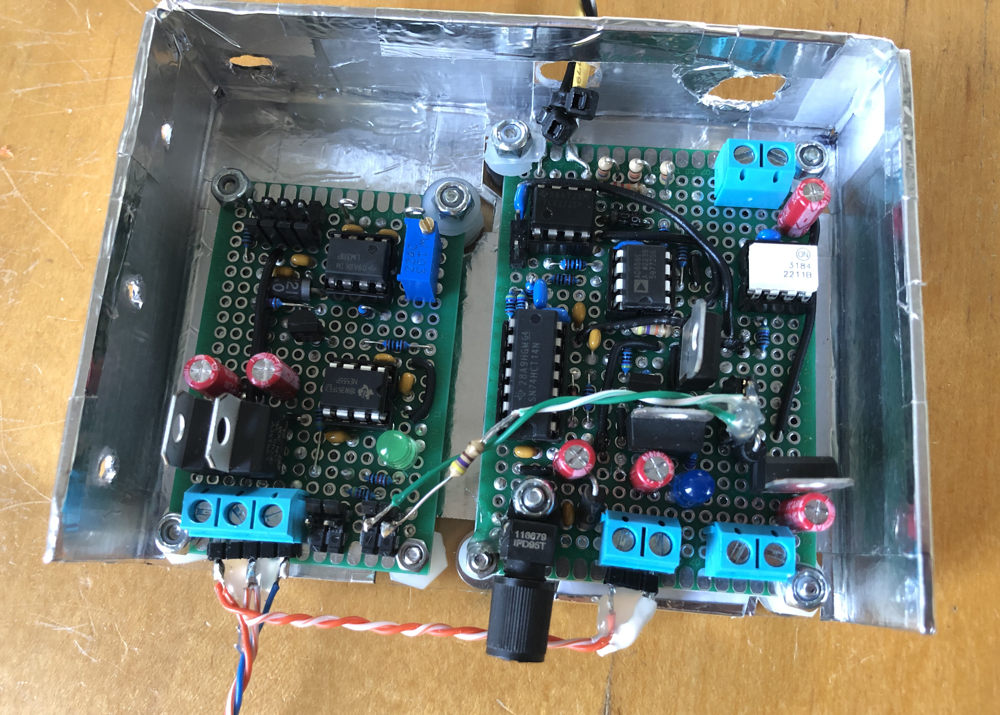